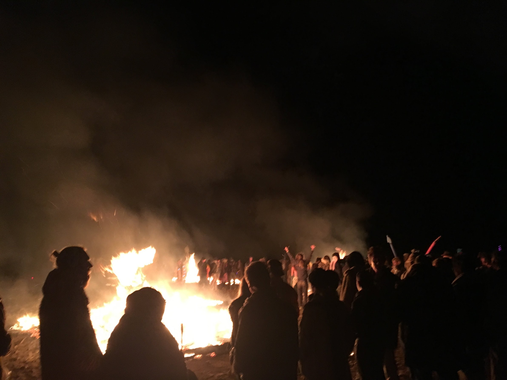
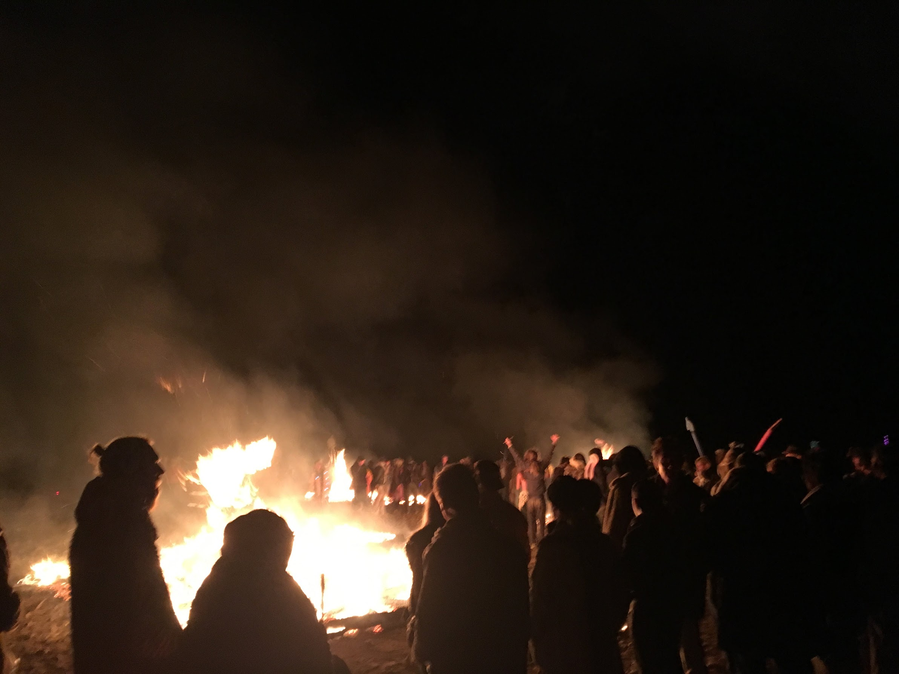

When the swiss and americans collide and decide to throw down in Tankwa Town

Involvement
- Electrical Design
- Sourcing and rental of a generator
- Trenching plan to the structures
- Sound system wiring
- Lighting Design
- Philip's color kinetics for each structure, all wirelessly networked, controlled from the DJ booth via custom python hooks.
- Mechanical Design
- Rotating lights… this was Africa so sourcing things is difficult. I found some disco ball motors in Cape Town, some square mirrors and welded up a frame to connect them all together. Then simple 120v LED spot lights were aimed up at the rotating structure
- Network Design
- Ubiquiti equipment throughout creating a wireless network between each of the structures. As a bonus, the main lighthouse was hooked into the events wifi allowing me to control the lights from anywhere at the event!


 
